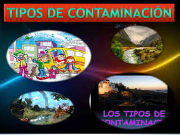

Contaminacion Ambiental
Contaminacion Ambiental

Tipos de contaminacion


La contaminación es la presencia o acumulación de sustancias en el medio ambiente que afectan negativamente el entorno y las condiciones de vida, así como la salud o la higiene de los seres vivos. Con este significado también se suele utilizar el concepto de contaminación ambiental.
Como contaminación también se denomina una alteración en una sustancia o un producto, como un alimento o una muestra. Por ejemplo: “La contaminación de las muestras obligó a los científicos a recoger nuevas muestras.
La contaminación del agua es una modificación o alteración del agua que tiene consecuencias negativas en el medio ambiente y en los seres vivos. También se utiliza el concepto de contaminación hídrica. El ser humano es el principal responsable de la contaminación del agua, especialmente a través del vertido de aguas residuales, que no han sido tratadas y que proceden de actividades como la industria, la ganadería y la agricultura, en dicho medio. Se pueden distinguir tres tipos de agentes contaminantes del agua: físicos, químicos y biológicos.
La contaminación del aire es la existencia de partículas sólidas, líquidas y gases perjudiciales para los seres vivos y el entorno. En ocasiones, se utilizan términos semejantes como contaminación atmosférica. La contaminación del aire puede provocar graves problemas de salud a través de la inhalación de sustancias tóxicas. Puede proceder de fuentes naturales como, por ejemplo, la erupción de un volcán, o de la acción del ser humano. Algunas de estas sustancias contaminantes del aire son el monóxido de carbono, el ozono y el metano. El smog, una especie de niebla formada por una mezcla de humo y partículas en suspensión, es una evidencia de la contaminación del aire en las ciudades industriales.
La contaminación del suelo es la presencia de sustancias que afectan negativamente las características y propiedades del suelo y que provocan desequilibrios físicos, químicos y biológicos que afectan de forma negativa a los seres vivos y el entorno. El suelo se puede contaminar por influencia del aire o del agua, que introduce agentes contaminantes, pero también al acumular o arrojar sustancias nocivas como los fertilizantes. Algunas consecuencias considerables de la contaminación del suelo son el aumento de la erosión y la disminución de la fertilidad del terreno
La contaminación visual es la modificación de un entorno producida por la existencia de uno o varios elementos, cuya presencia impide o perjudica la visibilidad o afecta negativamente la estética de un lugar. La contaminación visual puede tener consecuencias perjudiciales para la salud, como el estrés. Algunos ejemplos de contaminación visual son la acumulación de carteles publicitarios en las carreteras o espacios urbanos, o la construcción de edificios en zonas protegidas.
Como contaminación acústica o sonora se conoce aquella que se produce como consecuencia de las alteraciones que causa el exceso de sonido en las condiciones normales del medio ambiente. La contaminación sonora puede ser provocada por una multitud de actividades humanas, como las asociadas a la industria, la construcción, el comercio, el entretenimiento, el tráfico o los aviones. El ruido excesivo o molesto puede llegar a ser perjudicial para la salud auditiva, física y mental de las personas, así como para la calidad de vida en general y, en consecuencia, debe estar sometida a control
La contaminación hace que las personas estemos cada vez más expuestas a padecer problemas cardiovasculares, con el grave peligro que esto entraña para nuestra salud y vida.
La capa de ozono es la que nos protege de los rayos del Sol, los cuales pueden llegar a ser mortíferos sin esta capa. la consecuencia de este debilitamiento es que cada vez nos protege menos y, por ende, cada vez tenemos una mayor temperatura en el planeta. Esto no solo hace que cada vez haya más zonas desiertas en las que es imposible vivir, sino que también hace que el hielo en los polos se deshaga y mueran muchas especies por ello. No hace falta mencionar que esto hace subir indudablemente el nivel del mar y que, de seguir así, muchas ciudades costeras se verán arrasadas, quedándose sin playas y sin zona costera.
La contaminación al medio ambiente afecta al agua y al suelo, lo que hace que cada vez haya más especies en peligro de extinción. El agua no es potable en una gran cantidad de sitios y el suelo para la siembre no tiene los nutrientes necesarios, lo que hace que cada vez se pueda cultivar menos y que el número de cosechas para nuestro sustento sea cada vez menor.
Seguro que ya te has dado cuenta que los inviernos pueden ser mucho más fríos o que los veranos son mucho más calurosos, a la vez que seguro te has dado cuenta que las estaciones como la Primavera Verano y el verano pueden ser más largas y que las de temperaturas medias, son cada vez más cortas. Todos estos cambios y los fenómenos que no se habían visto desde hace mucho tiempo o incluso nunca se habían visto son causados por la contaminación.
El reciclaje consiste en obtener una nueva materia prima o producto, mediante un proceso fisicoquímico o mecánico, a partir de productos y materiales ya en desuso o utilizados. De esta forma, conseguimos alargar el ciclo de vida de un producto, ahorrando materiales y beneficiando al medio ambiente al generar menos residuos.El reciclaje surje no sólo para eliminar residuos, sino para hacer frente al agotamiento de los recursos naturales del planeta.


 4
4